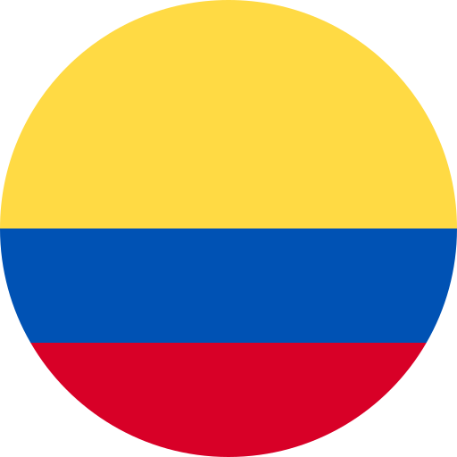

<Particles id="tsparticles" [options]="options"></Particles>
<app-header (toggleSidebarForMe)="sideBarToggler()"></app-header>
<mat-drawer-container>
    <mat-drawer mode="side" [opened]="sideBarOpen">
        
        
        <app-sidenav></app-sidenav>
        
        <a (click)="switchLanguage('es')"  >
            
          
          
        </a>
        <div class="dropdown">
        <a  (click)="switchLanguage('en')"  >
           
                
          
        </a>
      
            
          </div>
          
        
    </mat-drawer>
   
    <mat-drawer-content>
        
        <router-outlet></router-outlet>
        
        <app-footer ></app-footer>
    </mat-drawer-content>

</mat-drawer-container>